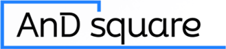

혁신적이고 효율적인 IT 솔루션을 제공하는
전문가 그룹 앤드스퀘어는,
고객 시스템 구현의 핵심 요소인
분석과 설계를 중심으로
소프트웨어 개발 및 시스템 구축을 위해
설립되었습니다.
What begins with your needs becomes
INNOVATION, GROWTH, ANDSQUARE.
앤드스퀘어 주식회사는 해당 분야의 25년 이상 경력을
가진 전문가로 구성되어, 시스템 구축을 위한
보다 효율적이고 합리적인 방법론을 제시하며,
고객사의 Needs 충족 및 경쟁력 확보에 중점을 두는
믿음직한 IT 파트너입니다.
영문 CI
국문 CI
혁신적이고 효율적인 IT 솔루션을 제공하는 전문가 그룹
Innovation
나, 우리 그리고 고객의
가치창조를 위한, 혁신을
멈추지 않습니다
Open-mind
고객과 시장의 목소리에
열린 마음으로 귀를
기울입니다
Professionalism
전문가로서의 자부심을
가지고 결과에 책임을
집니다
앤드스퀘어는 전문 인력, 전략적 파트너십, 풍부한 프로젝트 경험을 바탕으로 최적의 정보시스템 구축과 현장 맞춤형 솔루션을 안정적으로 제공합니다.
정보화 컨설팅
평균 20년 이상의 경력을 바탕으로 고객의 환경을 고려한 환경분석, 현황분석, 실행계획, 미래모형을 제시하며 정보화 수행을 위한 역량 교육 등
향후 유지 가능한 효율적인 방안을 제공합니다.
정보시스템 설계
고객이 필요로 하는 정보시스템에 대한 기획부터 개발과 구축, 운영까지의 모든 서비스, 즉 시스템 통합(SI) 서비스를 제공합니다.
물류에 특화된 IT 전문가 그룹으로서 고객사의 물류 솔루션을 새롭게 기획하거나,
기존의 물류 솔루션을 개선하기 위한 리빌딩까지, 물류 솔루션 구축의 전 범위를 사업영역으로 합니다.
해운, 항공, 운송, 창고, 특송 및 통관 처리의 기능을
클라우드 기반 SaaS 형태로 구축
현업 전문가와의 파트너쉽을 기반으로 항만의 물류 프로세스 혁신
변화하는 기술트렌드와 다변화되는 현장 제조 공정에 맞추어 새로운 사업진출을 모색하고 있습니다.
디지털화와 자동화를 통해 생산 효율성을 극대화하는 스마트 팩토리 솔루션을 구축하고자 하며, 생산 데이터 실시간 모니터링 MES(제조실행시스템),
ERP, SCM을 통합하는 등 제조 경쟁력을 높일 수 있는 스마트 제조 환경을 만들겠습니다
정부기관의 대형 서비스를 설계 및 구축하고, 서비스 오픈부터 운영까지 경험한 당사의 유지 & 보수 노하우로 고객의 서비스 유지 뿐만 아니라 운영 중에서 발생될 수 있는 문제의 해결과 시스템 업데이트의 선순환을 보장합니다.
24시간 모니터링과 신속한 문제 해결로 고객의 정보시스템이 지속적으로 안정적으로 운영될 수 있도록 지원합니다.
정기점검과 체계적인 유지보수로 잠재적인 문제를 사전에 예방하여 시스템 가용성을 극대화합니다.
고객의 요구사항에 맞춰 맞춤형 서비스 수준 협약(SLA)을 체결하여 안정적인 서비스 제공을 약속합니다.